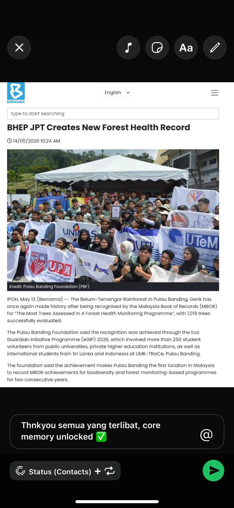
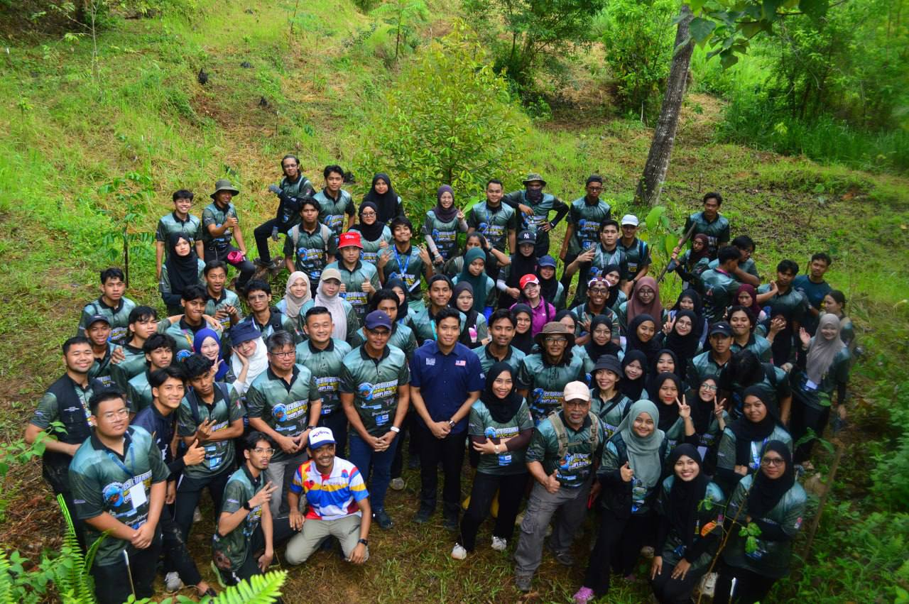
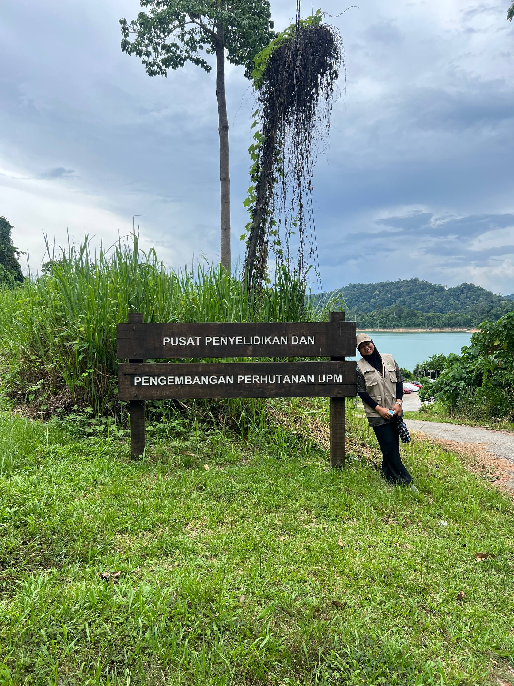
The experience of participating in the 'Volunteer Eco Guardian' Initiative Program at ROYAL BELUM FOREST, PULAU TASIK BANDING, PERAK has had a profound impact on me. Gathering with volunteers from various universities for a common goal taught me the importance of preserving our forest ecosystem. In addition to learning about forestry, this program also tested our team spirit and left me with sweet memories that I will never forget.
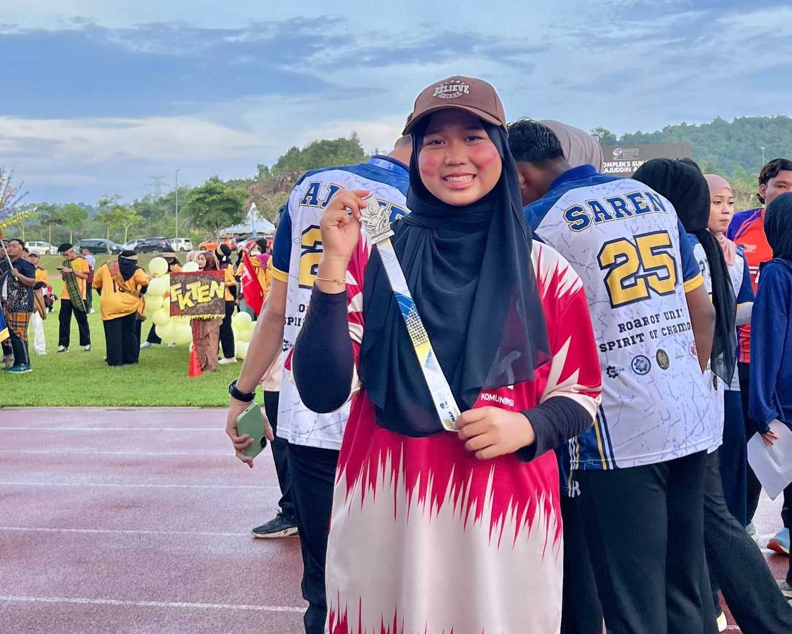
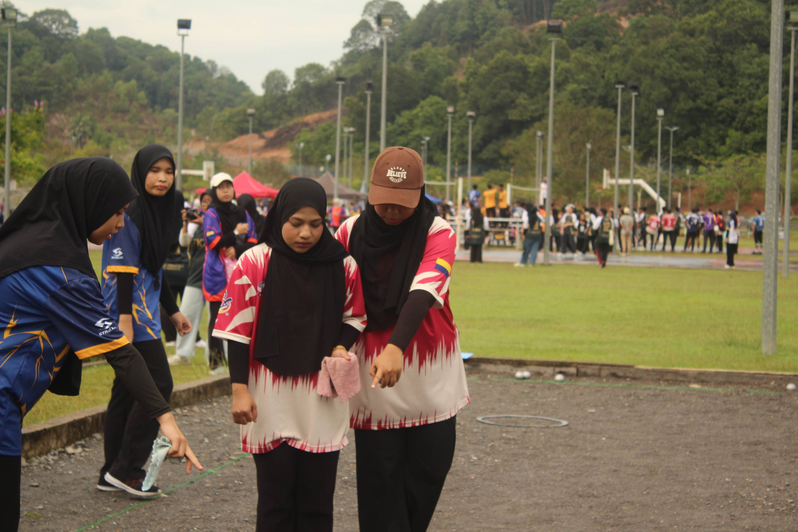
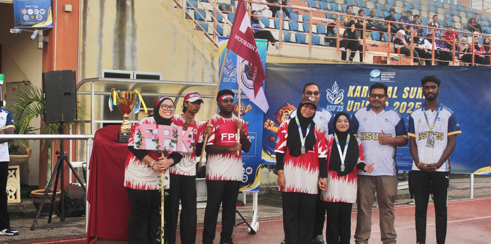
A highly meaningful achievement when I had the opportunity to represent the Faculty of Business and Communication (FPK) in the Petanque event during the UniMAP University Sports Carnival. Competing with other teams requires high focus and solid strategies. Thank God, our partnership bore fruit as we successfully secured second place in the Female Duo category. This experience not only made the faculty proud but also taught me the meaning of resilience and teamwork.
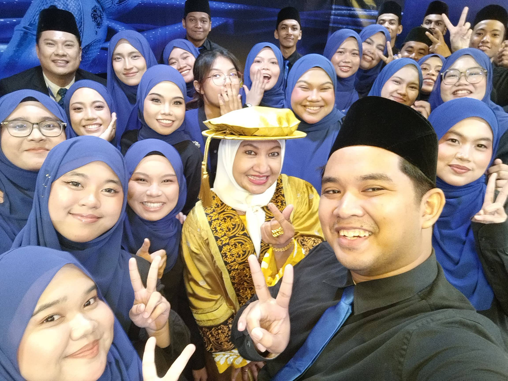
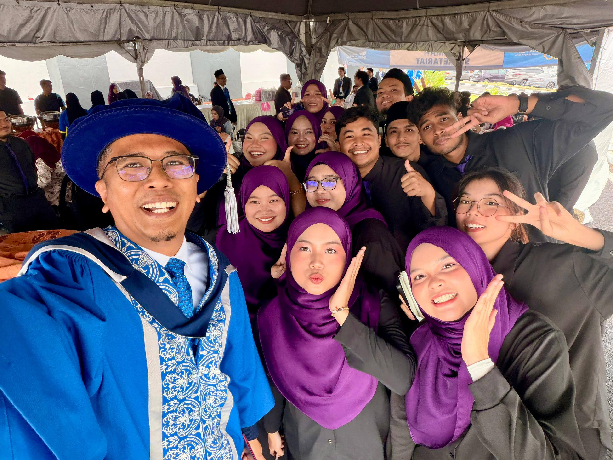
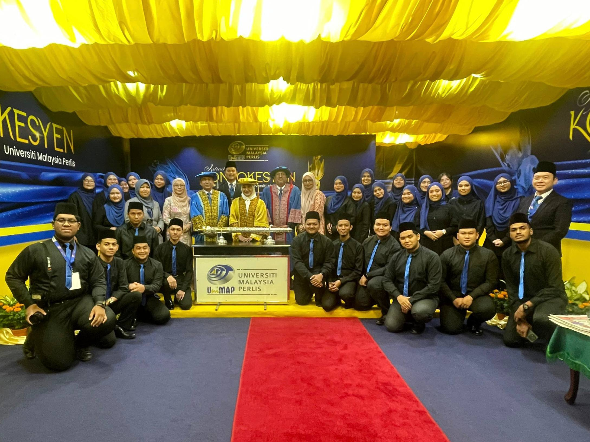
An extraordinary experience joining the UniMAP Choir team to perform throughout the 5-day UniMAP Convocation Ceremony. Performing to entertain the audience in front of the Perlis Royal Family (the Crown Prince & the Crown Princess of Perlis) gave us all an extraordinary aura and spirit. Double fortune for the choir team when we were able to take close-up photos and selfies with the Perlis Crown Princess at the end of the event. Thank you UniMAP for this valuable opportunity, the hard work and effort in rehearsing have finally paid off with such beautiful memories!
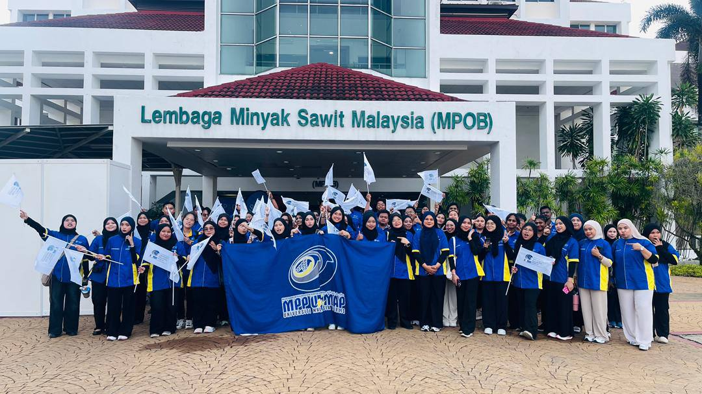
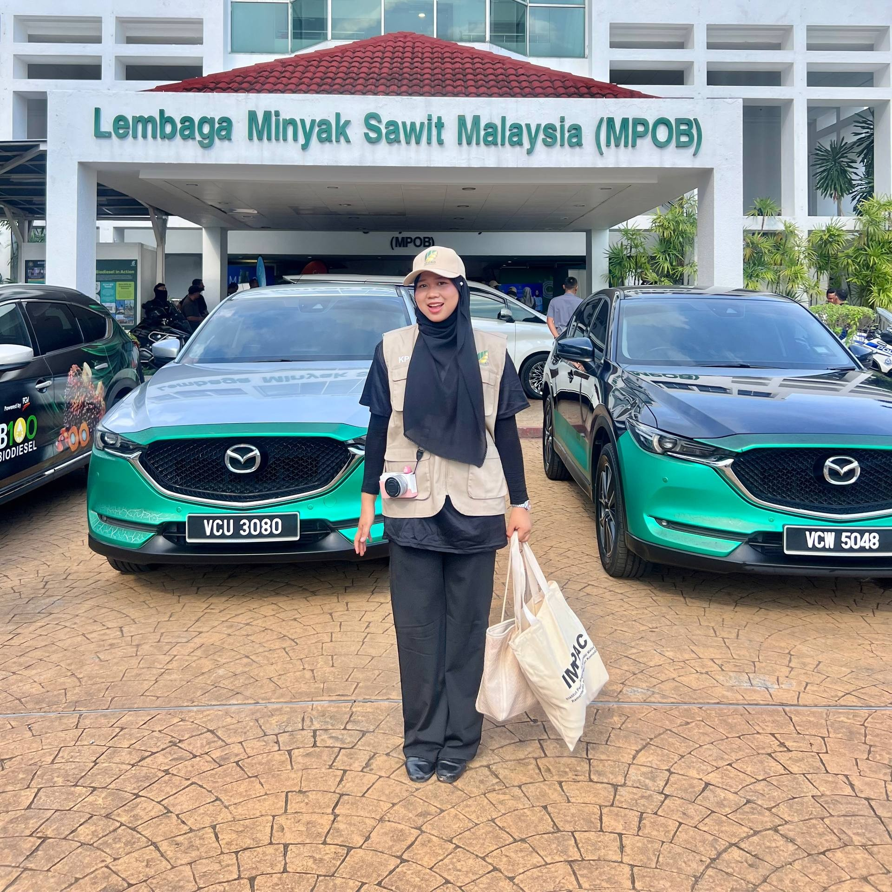
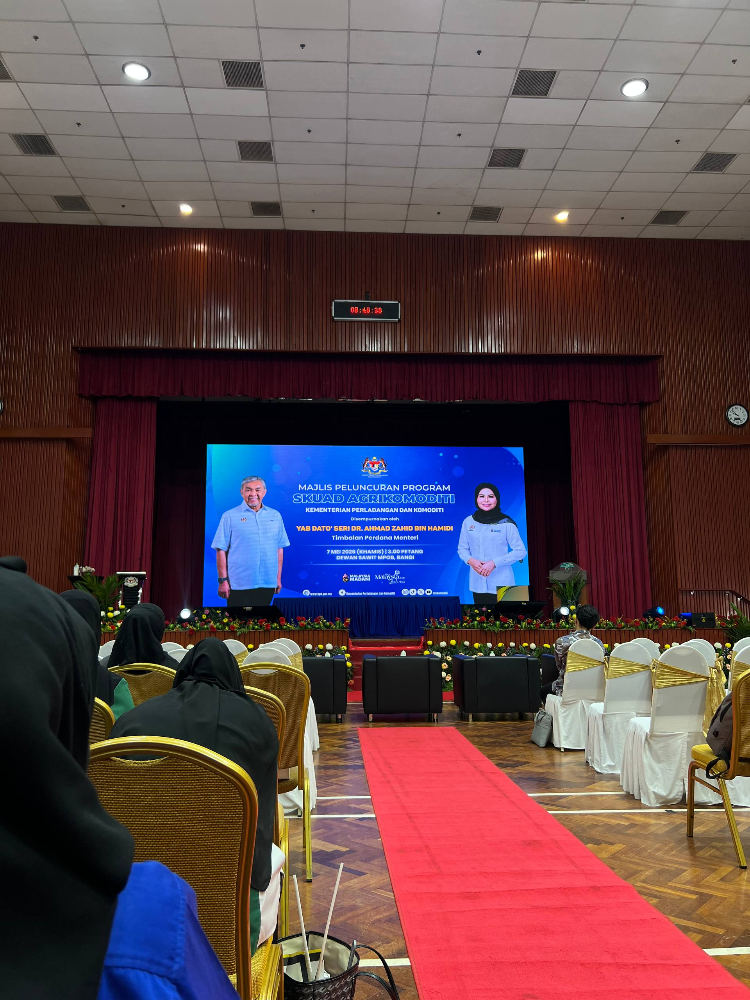
A highly valuable experience when I, along with a delegation of UniMAP students, were selected to step into Bangi to participate in the volunteer mission during the Launch Ceremony of the Agrikomoditi Squad Program. Through this large-scale program, we were exposed to various new knowledge, especially regarding the national commodity industry and innovations in food processing based on palm oil. This involvement not only broadened our horizons regarding the impact of the agribusiness sector on the economy but also instilled a strong spirit of volunteerism within us.